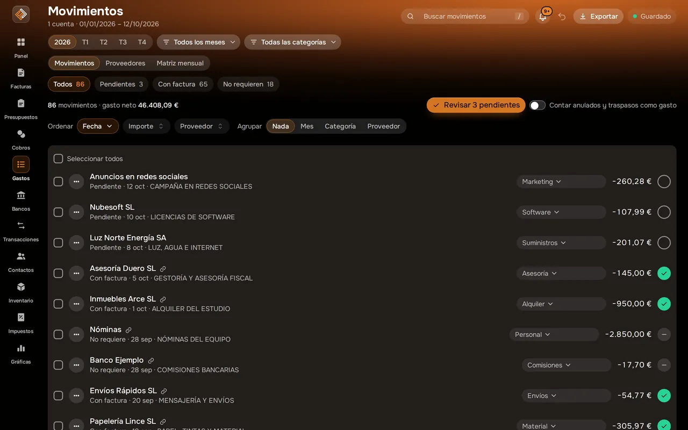
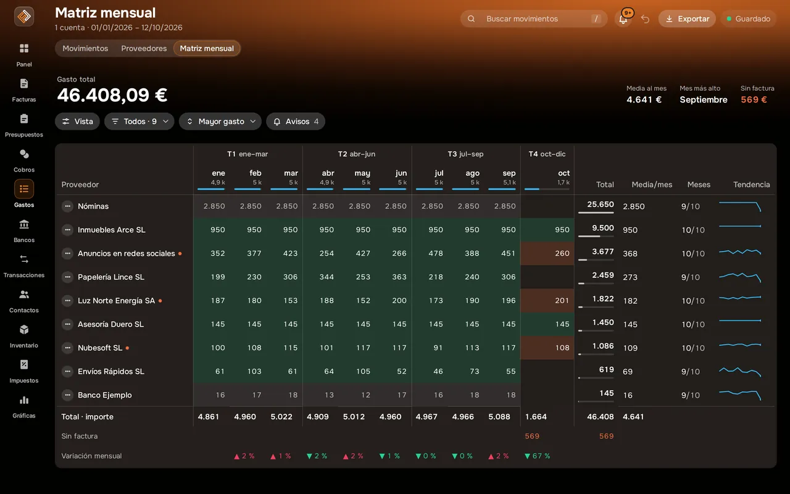
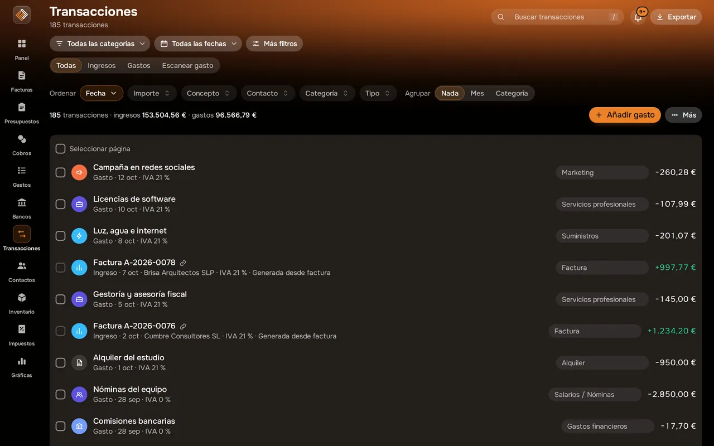

Gastos y justificantes Nuevo
Cada gasto con su justificante, sin perseguir tickets.
Haz una foto al ticket o sube el PDF y el OCR extrae fecha, proveedor, base imponible, IVA y total. Después ves qué movimientos siguen sin justificante y cuánto gastas cada mes.
Proveedores, estado del justificante y matriz mensual: función nueva en despliegue gradual.

Captura real de Facturales con datos de ejemplo.
Así se ve en la app
Matriz mensualCuánto gastas cada mes, por categoría.

Ingresos y gastosTodas tus transacciones, con «Escanear gasto» a mano.

Qué puedes hacer
Escaneo OCR
Fecha, proveedor, base, IVA y total leídos de la foto o del PDF. Revisas y guardas.
Estado del justificante
Pendiente, justificado o no requiere, con revisión rápida uno a uno.
Proveedores
Tus gastos agrupados por proveedor.
Matriz mensual
Gasto por categoría y mes, con avisos de lo que se sale de lo normal.
Justificantes privados
Los archivos se guardan en almacenamiento privado de tu cuenta.
ZIP para la gestoría
Descarga los justificantes del periodo en un único archivo.
Cómo funciona
Escanea
Foto o PDF del ticket o factura recibida.
Revisa
Comprueba los datos y la categoría; el gasto entra en tus impuestos.
Cierra el mes
Sin justificantes pendientes y con el ZIP listo para tu gestoría.
Preguntas frecuentes
¿Cuántos documentos puedo escanear?
Depende del plan: 10 al mes en Starter, 75 en Pro y 300 en Ilimitado.
¿El gasto cuenta en el IVA soportado?
Sí. Los gastos con ticket o factura registrada se incluyen en el resumen fiscal del trimestre.
¿Están disponibles proveedores y matriz mensual?
Forman parte de Gastos, una función nueva que estamos activando de forma gradual. El escaneo OCR está disponible en todos los planes.
Pon orden en tus finanzas esta semana
Crea tu cuenta, emite tu primera factura e importa tu primer extracto. Tienes 14 días de prueba en cualquier plan y puedes cancelar cuando quieras.